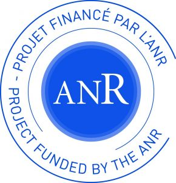

FBIMATRIX (Full Bayesian Inference in Matrix and Tensor Factorization Models)
2017-2020
116E580

FBIMATRIX Türkiye Bilimsel ve Teknolojik Araştırma Kurumu (TÜBITAK) ve Agence Nationale de la Recherche (ANR) tarafından desteklenen uluslararası bir araştırma projesidir.
Proje özeti
Bu proje matris ve tensör ayrışımları için verimli ve etkili Bayesci yöntemler geliştirmeyi hedeflemektedir. Projenin alanyazına ana katkılarından biri olarak, hesaplamalarda paralellikten faydalanıp, hesaplama zamanını azaltarak büyük tensörlerde uygulanabilir olan ve alanyazında en ileri algoritmalardan daha iyi yakınsama performansı gösteren yeni Markov zinciri Monte Carlo yöntemleri teklif ediyoruz. Projenin bir başka merkezi çıktısı, sayma verilerini modellemeye imkan veren Bayesci atama modeli (BAM) adını verdiğimiz yeni bir dinamik üretici modeldir. BAM birçok olasılıksal negatif olmayan tensör ayrışımı (NTA) ve konu modelini aynı çerçeve içerisinde toplamaktadır. BAM'da, atamalar bir Bayesci ağ kullanılarak yapılmakta, bu Bayesci ağın koşullu olasılık tabloları ise analitik olarak toplanarak ortak dağılımdan elenebilmektedir. Bu çalışmada, bu birleştirici BAM modelini yeni çıkarım yöntemleri ile de donatıyoruz. Bu yöntemlerden biri, hem model puanlamada hem de tensör ayrışımı görevinde kullanılabilen bir varyasyonel Bayes yöntemidir.
Bir başka ana yöntemsel katkımız ise sayma verilerinde tensör modellerinin puanlanması ile alakalıdır. BAM'daki atamaları ardışık olarak görüldüğünde ortaya çıkan marjinal sürecin, tam sayı değerli kendini güçlendiren Pólya küpü süreçlerinin Pólya-Bayes süreci adını verdiğimiz özel bir türü olduğunu gösteriyoruz. Bu Pólya küpü kurgusunu kullanarak BAM'da marjinal olabilirlik kestirimi için yeni bir ardışık Monte Carlo (AMC) algoritması teklif ediyoruz; bu algoritma NTA ve konu modellerini de içeren ayrık değişkenli, gizli değişkenler içeren Bayesci ağlar için ortak bir model puanlama yöntemi olarak öne çıkmaktadır. AMC kestiricisinin bir dikkat çekici özelliği, genellikle yanlı olan varyasyonel Bayes algoritmalarından farklı olarak yansız olmasıdır. Verinin seyrekliğinden faydalanıyor olması bu AMC kestiricisinin bir başka önemli özelliğidir, bu sayede ilişkisel verilerde sıklıkla karşılaşılan büyük seyrek sayma tensörlerinin analizinde ölçeklenebilir olmaktadır. Ayrıca, AMC-bazlı marjinal olabilirlik kestiricimizin Bayesci model seçimi ve hiperparametre kestirimi için kullanılabilecek, ilkeli ve (gerçek sonsal dağılıma uyum göstermek manasında) doğru bir Markov zinciri Monte Carlo algoritmasına entegre edilebileceğini gösteriyoruz. Son olarak, BAM'ın modelleme kapasitesi ve model puanlama ve karşılaştırmada olanak sağladığı yöntemlerden ilham alarak çalışmamızı hesapsal nedensellik keşfi doğrultusunda genişletiyoruz. Tamamen gözlemlere dayanan bir veri kümesini yaratmış olabilecek yegane nedensel modelin seçimine imkan verecek model ve çıkarım algoritmaları geliştiriyoruz ve bu algoritmaları yapay ve gerçek veriler üzerinde test ediyoruz.
Proje web sitesi:
Proje çıktıları ile alakalı ayrıntılı bilgiler ilgili web sitesinde görülebilir.
Proje kaynak kodları:
Proje boyunca gerçeklenen kaynak kodlar aşağıdaki bağlantılarda görülebilir: